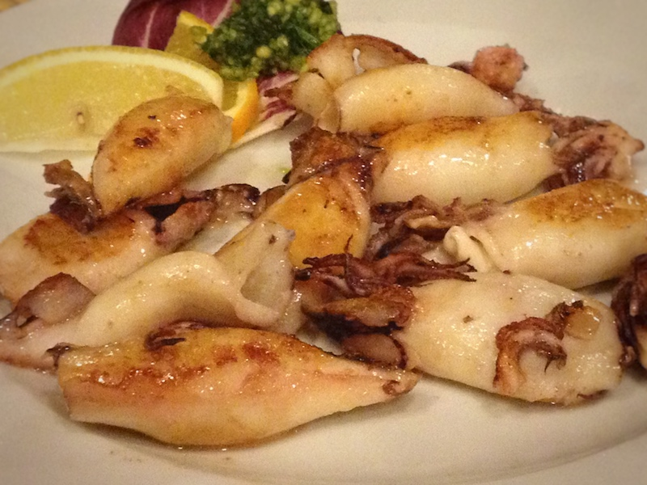

Photo by Francesca Tosolini
A typical Italian meal is made of an antipasto (appetizer), a primo (first course), a secondo (second course), a contorno (side dish), a dolce (dessert) and, at the end, a coffee. The secondo is the second course, during which Italians eat many different kinds of meat: fish, pork, chicken, veal, lamb, wild boar, and rabbit. In the finest restaurants it’s not unusual to find frog legs or snails listed on the menu. {This is an excerpt from chapter 3 “Italian cuisine and food establishments” of the eBook “Italy from the Inside. A native Italian reveals the secrets of traveling in Italy”}